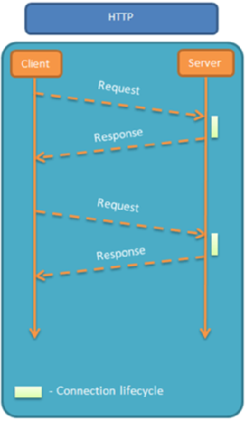

spring-task
Spring Task 是Spring框架提供的任务调度工具，可以按照约定的时间自动执行某个代码逻辑。
只要是需要定时处理的场景都可以使用spring–task。
cron表达式
cron表达式其实就是一个字符串，通过cron表达式可以定义任务触发的时间
**构成规则：**分为6或7个域，由空格分隔开，每个域代表一个含义
每个域的含义分别为：秒、分钟、小时、日、月、周、年(可选)
举例：
2022年10月12日上午9点整 对应的cron表达式为：0 0 9 12 10 ? 2022

说明：一般日和周的值不同时设置，其中一个设置，另一个用？表示。
**比如：**描述2月份的最后一天，最后一天具体是几号呢？可能是28号，也有可能是29号，所以就不能写具体数字。
为了描述这些信息，提供一些特殊的字符。这些具体的细节，我们就不用自己去手写，因为这个cron表达式，它其实有在线生成器。
cron表达式在线生成器：https://cron.qqe2.com/
使用步骤
在项目中使用spring-task
1).spring-task坐标
2). 启动类添加注解 @EnableScheduling 开启任务调度
3). 自定义定时任务类
|
|
orderMapper中的方法
|
|
WebSocket
WebSocket 是基于 TCP 的一种新的网络协议。它实现了浏览器与服务器全双工通信——浏览器和服务器只需要完成一次握手，两者之间就可以创建持久性的连接， 并进行双向数据传输。
HTTP协议和WebSocket协议对比：
- HTTP是短连接
- WebSocket是长连接
- HTTP通信是单向的，基于请求响应模式
- WebSocket支持双向通信
- HTTP和WebSocket底层都是TCP连接
 
**思考：**既然WebSocket支持双向通信，功能看似比HTTP强大，那么我们是不是可以基于WebSocket开发所有的业务功能？
WebSocket缺点：
服务器长期维护长连接需要一定的成本 各个浏览器支持程度不一 WebSocket 是长连接，受网络限制比较大，需要处理好重连
**结论：**WebSocket并不能完全取代HTTP，它只适合在特定的场景下使用
实现步骤：
1). 直接使用websocket.html页面作为WebSocket客户端
2). 导入WebSocket的maven坐标
3). 导入WebSocket服务端组件WebSocketServer，用于和客户端通信
4). 导入配置类WebSocketConfiguration，注册WebSocket的服务端组件
5). 导入定时任务类WebSocketTask，定时向客户端推送数据